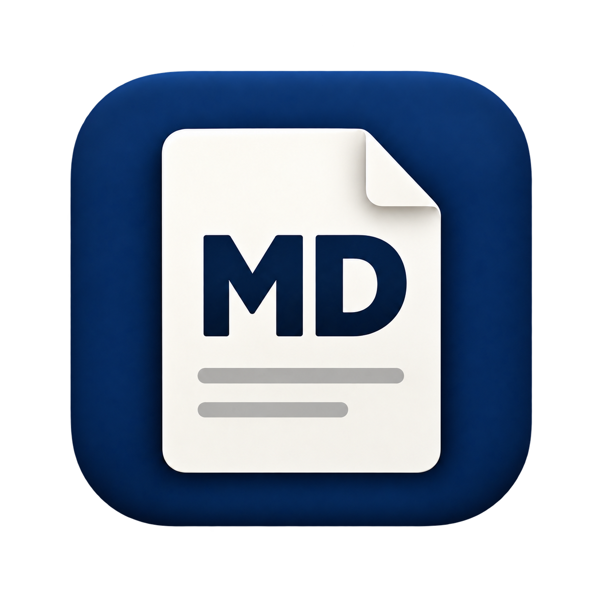

DAILY NOTES / 01
작은 기록이
좋은 생각으로
하루의 아이디어를 읽기 좋은 문서로.
오늘의 할 일
- ✓ 아이디어 모으기
- ✓ 문서 정리하기
- □ 동료에게 공유하기
| 기능 | 상태 |
|---|---|
| 수식 · 다이어그램 | 지원 |
| 오프라인 보기 | 지원 |
기록은 가볍게, 생각은 선명하게.

엠디봄MDBomFREE & OPEN SOURCE · v1.0
AI가 정리한 메모부터 프로젝트 문서까지.
기호로 가득한 .md 파일을
읽기 좋은 문서로 만나보세요.
Windows · macOS / 무료 · 읽기 전용
# 작은 기록이
# 좋은 생각으로
하루의 아이디어를 **읽기 좋은 문서**로.
## 오늘의 할 일
- [x] 아이디어 모으기
- [x] 문서 정리하기
- [ ] 동료에게 공유하기
| 기능 | 상태 |
| --- | --- |
| 수식 · 다이어그램 | 지원 |
| 오프라인 보기 | 지원 |
> 기록은 가볍게, 생각은 선명하게.DAILY NOTES / 01
하루의 아이디어를 읽기 좋은 문서로.
| 기능 | 상태 |
|---|---|
| 수식 · 다이어그램 | 지원 |
| 오프라인 보기 | 지원 |
기록은 가볍게, 생각은 선명하게.
위 버튼을 눌러 문서와 소스를 비교해 보세요.
앱의 보기 방식을 설명하기 위한 웹 예시입니다.
MADE FOR READING
단순한 메모도, 수식이 담긴 자료도.
문서의 내용에 집중할 수 있도록.
문서와 Markdown 소스를 좌우 또는 상하로 나란히 보세요. 스크롤 연결로 같은 위치를 따라가고, 화면별 폭과 글꼴을 편하게 조절할 수 있습니다.
제목·표·체크리스트·코드 강조는 기본. LaTeX 수식, Mermaid 다이어그램과 로컬 SVG 이미지도 인터넷 연결 없이 표시합니다.
인쇄하거나 PDF로 저장하고, 이미지·수식·다이어그램을 담은 하나의 HTML 파일로 내보내세요. 받는 사람은 엠디봄 없이도 브라우저에서 열 수 있습니다.
YOUR FILES STAY YOURS
엠디봄은 읽기 전용 앱입니다. 문서 내용은 외부 서버로 전송하지 않으며, 설치 후 오프라인으로 사용할 수 있습니다. 편집은 익숙한 편집기에서 하세요. 저장하면 엠디봄이 자동으로 새로고침합니다.
GET MDBOM
정식 버전 1.0 · 무료 오픈소스
GitHub에서 최신 정식 설치 파일을 내려받으세요. 정부 GitLab은 보조 다운로드로 제공합니다.
Windows 10 22H2 이상 / 11 · x64
Microsoft Edge WebView2 Runtime 필요
macOS 14 이상 · Apple Silicon
M1 및 이후 Apple Silicon Mac 지원
로그인 없이 다운로드할 수 있습니다. GitHub 릴리스에서 ZIP 배포본과 체크섬도 확인하세요.
Windows R2는 WebView2 자동 설치를 추가한 개선 설치본입니다. 기존 파일은 유지하며 R2 전용 체크섬을 제공합니다.
Windows 설치 파일은 미서명이며, Mac 앱은 Apple Developer ID 서명·공증이 되어 있지 않습니다.
MDBom-1.0.0-Setup-x64-r2.exe, Mac은 MDBom-1.0.0-macOS-arm64.dmg를 받으세요. Source code / 소스 코드는 일반 설치용이 아닙니다.엠디봄은 개인 오픈소스 앱입니다. 정부 GitLab에 등록되어 있다는 사실이 정부의 공식 앱 인증이나 보안 보증을 의미하지는 않습니다.
Windows 10 22H2 / Windows 11, x64용입니다. 실행 중인 엠디봄을 종료한 뒤 EXE 설치 파일을 실행하세요. 기존 사용자는 새 설치 파일로 업데이트하며 설정은 유지됩니다.
Microsoft Edge WebView2 Runtime이 필요합니다. R2 설치 프로그램은 없을 때만 Microsoft에서 내려받아 서명을 확인하고 자동 설치합니다. 처음 설치 시 인터넷 연결이 필요하며, 이미 설치되어 있으면 다운로드를 건너뜁니다. 자동 설치가 실패하거나 오프라인인 경우 Microsoft 공식 다운로드에서 Evergreen Standalone Installer · x64를 설치한 뒤 다시 실행하세요. .NET은 배포본에 포함되어 따로 설치할 필요가 없습니다.
ZIP과 기존 1.0 설치본에는 WebView2 자동 설치가 없습니다. ZIP을 선택했다면 폴더 전체를 압축 해제한 뒤 MarkdownViewer.exe를 실행하세요. 기관·회사 PC는 설치 정책에 따라 담당자 확인이 필요할 수 있습니다.
설치 파일은 코드 서명되지 않아 SmartScreen이 인식되지 않은 앱으로 안내할 수 있습니다. 경고 자체만으로 안전하거나 악성이라고 단정할 수는 없습니다.
이 앱을 위해 백신·SmartScreen·조직 보안 설정을 전체 해제할 필요는 없습니다. Microsoft의 SmartScreen 안내 ↗
macOS 14 이상, Apple Silicon(M1 이후)용입니다. Intel Mac용 배포본은 제공하지 않습니다.
공식 배포처와 파일을 확인하고 실행을 결정한 경우, 앱 실행을 한 번 시도한 뒤 시스템 설정 → 개인정보 보호 및 보안 → 보안에서 엠디봄 항목의 확인 없이 열기(Open Anyway)를 선택하고 인증·확인합니다. 항목이 없거나 조직에서 차단한 경우 관리자에게 문의하세요.
‘컴퓨터를 손상시킵니다’ 또는 파일 손상·악성코드 경고는 위의 개발자 확인 경고와 다릅니다. 이때는 실행을 중단하고 공식 배포처에서 다시 받거나 개발자에게 문의하세요. 터미널 명령으로 보안을 해제할 필요는 없습니다. Apple의 안전한 앱 열기 안내 ↗
앱에서 파일을 열거나 .md / .markdown 파일을 창으로 끌어다 놓으세요. 운영체제에서 엠디봄을 기본 앱으로 지정하면 파일을 더블클릭해서 열 수 있습니다.
엠디봄은 읽기 전용입니다. 다른 편집기로 문서를 수정해 저장하면 변경 내용을 자동으로 반영합니다.
베타 4에서 수식·Mermaid·SVG 표시를, 1.0에서 HTML 내보내기를 추가했습니다. 이번 정식 배포에는 Mac과 Windows에 동일한 새 MD 아이콘도 적용했습니다.
GitHub에서 새 설치 파일을 내려받으세요. 정부 GitLab은 보조 배포처이므로 이용 시 버전을 확인하세요. Windows는 새 설치 프로그램을 실행하고, Mac은 실행 중인 앱을 종료한 뒤 Applications의 앱을 교체합니다. 기존 설정은 유지됩니다.
GitHub 이슈에 사용한 운영체제와 증상을 알려주세요. 개발과 기본 정식 배포는 GitHub에서 진행하며 정부 GitLab을 보조 배포처로 제공합니다.